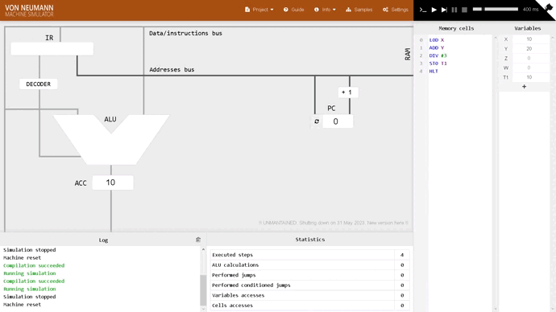

|

Von Neumann:John Von Neumann foi um importante matemático húngaro de origem judaica, no qual através de seus esforços juntamente com sua equipe em 1946 consolidou a teoria cibernética. Desta maneira, a arquitetura de John Von Neumann é composta por três importantes partes, sendo elas:
Registradores: São as memórias temporárias que existem na CPU (muito rapidas) Unidade de Controle: Responsável por controlar as instruções, buscando na memória principal, classificando e ordenando sua execução Unida Lógica Aritmética: Parte responsável pela execução das equações Contador de Programa: Responsável por avisar a Unidade de Controle sobre a proxima instrução que deve ser buscada e executada, atualizando a cada vez que é executado um ""ciclo""
Responsável por armazenar os dados e os códigos
Responsável por pegar os dados e demonstrar os dados que foram utilizados Ciclo do programa
Instruções do simulador:Dados -> X,Y,Z,W,T1,T2 Instruções possuem no máximo 1 operando -> Lod {Var e #num -> carrega um valor p/ o acomulador -> STO {Var -> coloca o valor do acumulador em uma var -> ADD {Var e # num -> Soma um valor ao acumulador -> SUB {Var e # num -> Subtrai um valor do acumulador -> MUL {Var e #num -> multiplica um valor pelo acumulador -> DIV {Var e #num -> Multiplica um valor pelo acumulador -> HLT - > FINALIZA O PROGRAMA |